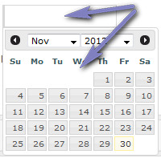
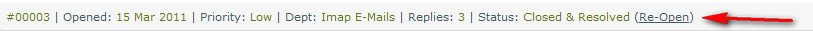

Documentation -


Documentation -

COMMERCIAL VERSION INCLUDES: - FREE upgrades for life - One time payment, NO subscriptions - ALL features unlocked and unlimited
Overview
Enables you to search previous tickets/disputes. At least one criteria must be specified. Specify more for better search.
Keywords or Ticket ID
Enter keyword(s) or ticket ID. This field searches comments, name and e-mail if keyword and id field if numeric. For ticket ID enter full ticket number or short number. ie: 000456 OR 456
Department
Specify department to search. If not specified, all are assumed.
Priority
Specify priority level. If not specified, all are assumed.
Date From/To
Both from and to dates must be specified for date filter. Click in date field to launch the date picker.
Date Picker Usage
Clicking into a date box launches the date picker. Use month/year filters and click to select date. Current date is highlighted.

Ticket Status
Specify ticket status. If not specified, all are assumed.
Assigned to
Filter by assigned user. ONLY seen for the main administrator.
Ticket Type
Specify ticket type. If not specified, all are assumed.
Re-Open Dispute/Ticket
Click the link on any dispute/ticket information bar to re-open. This is the same as opening from the closed pages.

Ticket Message Quick View
Clicking the small icon next to the ticket subject displays the original ticket message. Useful to see a ticket without clicking to view it:
Batch Operations
Use the batch operations to batch update department, status or priority for tickets. No emails are sent for batch operations.
Help Tips
The same or additional information may be provided by hovering your cursor over the  image next to each heading in the admin area if applicable.
image next to each heading in the admin area if applicable.